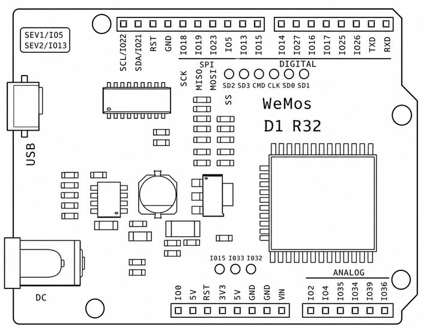

WeMos D1 R32（ESP32）— 本系統使用的控制板
| 通道 | GPIO | 脈衝範圍 | LEDC 通道 |
|---|---|---|---|
| S1（Servo 1） | 5 | 500–2500 µs | ch 14 |
| S2（Servo 2） | 13 | 500–2500 µs | ch 15 |
{"cmd":"servo","ch":1,"deg":90}，角度範圍 0–180°。| 馬達 | 相 | GPIO | 備註 |
|---|---|---|---|
| M3 | A | 35 | 輸入專用腳（無法輸出、無內部上拉） |
| M3 | B | 34 | |
| M4 | A | 36 | 輸入專用腳（無法輸出、無內部上拉） |
| M4 | B | 39 |
| GPIO | 類型 | 預設功能 | 備註 |
|---|---|---|---|
| 2 | 數位 I/O | 數位輸出 / 超音波 Trig | 也是板子 LED；開機時低電位 |
| 4 | 數位輸入 | 樂高按鈕 | INPUT_PULLUP |
| 15 | 數位輸入 | 數位讀取 | Strapping pin，開機勿強拉 |
| 26 | 數位輸出 / PWM / DAC | PWM / 類比輸出 | 支援 DAC 輸出 |
| 32 | 數位輸入 / ADC | 類比讀取 | 可改作 I2C SDA |
| 33 | 數位輸入 / ADC | 超音波 Echo | 可改作 I2C SCL |
| GPIO | 佔用原因 |
|---|---|
| 12 14 16 17 19 23 25 27 | AFMotor Shield 74HCT595 + 馬達 M1–M4 PWM（系統保留） |
| 5 13 | Servo S1 / S2 |
| 34 35 36 39 | M3/M4 編碼器（輸入專用腳） |